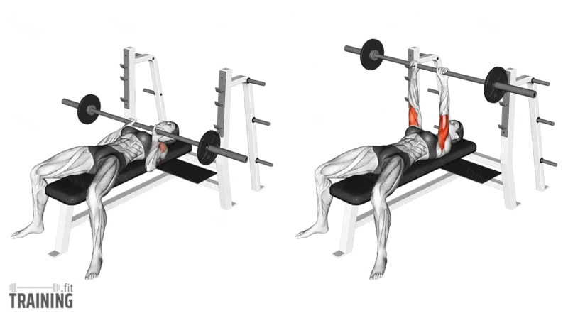
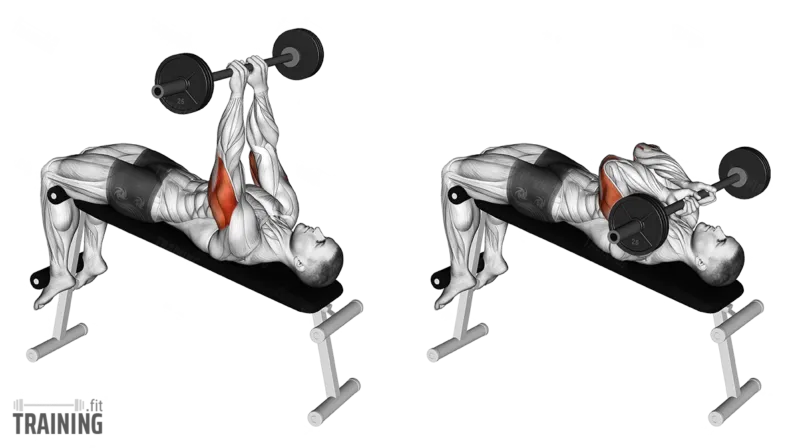
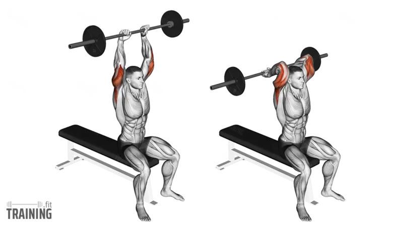

Exercise 01
Close-Grip Bench Press
A compound pressing movement that heavily targets the triceps, while also using the chest and front shoulders.

Form
- Lie flat on the bench with hands closer than normal bench press width
- Keep wrists straight and elbows tucked slightly in
- Lower the bar to your lower chest or upper sternum
- Press back up in a controlled line
- Keep your shoulder blades tight
Sets & Reps
Growth
3–4 × 6–10
Strength
4 × 4–6
Volume
3 × 8–10
Tip: Do not bring your hands too narrow. A moderate close grip is usually safer on the wrists and elbows.
Fact: Close-grip bench press is one of the best heavy triceps builders because it lets you overload more weight than most isolation exercises.
Exercise 02
Skull Crushers
A classic triceps isolation exercise that builds all three heads, with strong emphasis on the long head.

Form
- Lie on a bench with the bar above your chest
- Keep elbows pointed upward
- Lower the weight toward your forehead or just behind your head
- Extend back up under control
- Avoid letting the elbows flare too much
Sets & Reps
Growth
3–4 × 8–12
Control
3 × 10
—
—
Tip: Lowering slightly behind the head instead of directly to the forehead can feel smoother on the elbows.
Fact: Skull crushers are one of the best triceps movements for combining stretch and tension.
Exercise 03
Overhead Triceps Extension
Mainly targets the long head of the triceps, which is critical for overall arm size.

Form
- Sit upright and hold the weight overhead
- Keep your elbows pointed mostly forward
- Lower the weight behind your head
- Extend your arms back to the top
- Keep your core tight and avoid flaring too wide
Sets & Reps
Growth
3–4 × 8–12
Stretch
3 × 10–12
—
—
Tip: Use a full stretch at the bottom, but do not force the range if your elbows feel uncomfortable.
Fact: Because the arms are overhead, this exercise puts the long head under a deep stretch, which can be very effective for growth.
Exercise 04
Triceps Pushdown
A cable isolation exercise that targets the triceps through a smooth, controlled pressing motion.

Form
- Stand upright with elbows close to your sides
- Start with the handle around upper chest level
- Push the handle down until your arms are straight
- Squeeze the triceps at the bottom
- Return slowly without letting your elbows drift forward
Sets & Reps
Growth
3–4 × 10–15
Pump
2–3 × 12–15
—
—
Tip: Do not turn it into a bodyweight movement. Keep your torso still and let the triceps do the work.
Fact: Pushdowns are one of the easiest triceps exercises to control and are great for beginners and advanced lifters alike.
Exercise 05
Dumbbell Kickback
Isolates the triceps, especially the long head, by extending the arm behind the body.

Form
- Place one hand and one knee on a bench
- Keep your upper arm close to your torso
- Start with the elbow bent
- Extend the dumbbell straight back until your arm is fully straight
- Squeeze the triceps, then return slowly
Sets & Reps
Growth
3 × 10–15/arm
Strict
2–3 × 12–15
—
—
Tip: Keep your upper arm still. Only your forearm should move.
Fact: Kickbacks are more about strict contraction than heavy weight — control is everything.
Best Triceps Workout Order
For strength, long head development, and full contraction:
Close-Grip Bench Press — 3–4 sets
Skull Crushers — 3 sets
Overhead Triceps Extension — 3 sets
Triceps Pushdown — 3–4 sets
Kickbacks — 2–3 sets
This gives you heavy triceps strength, long head development, full contraction work, and better arm size overall.